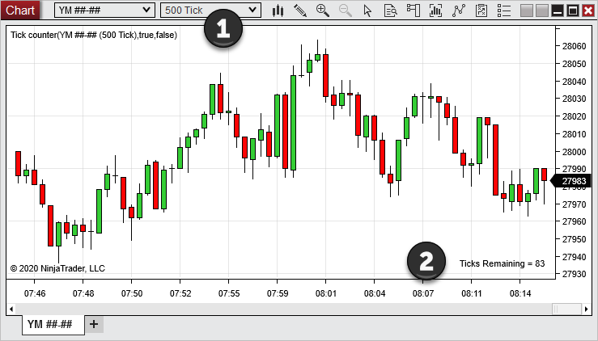
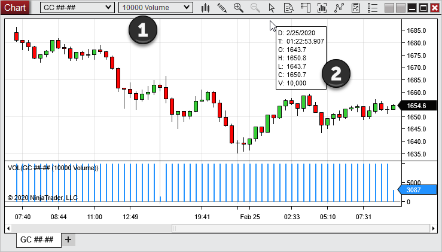
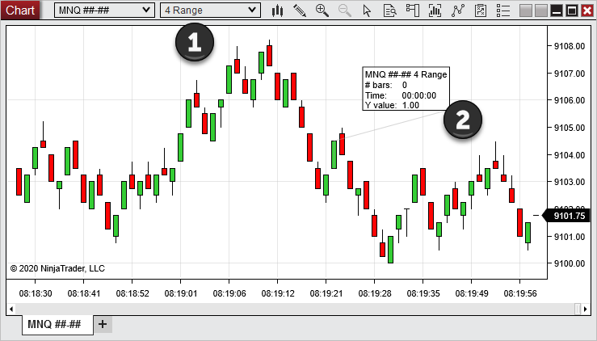
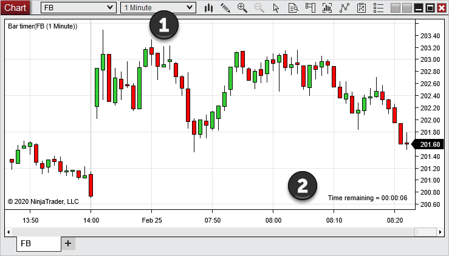
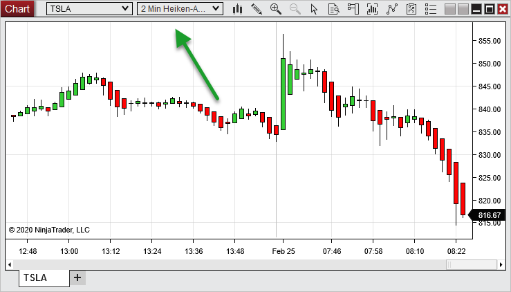
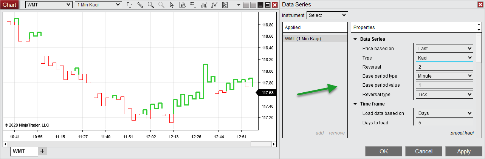
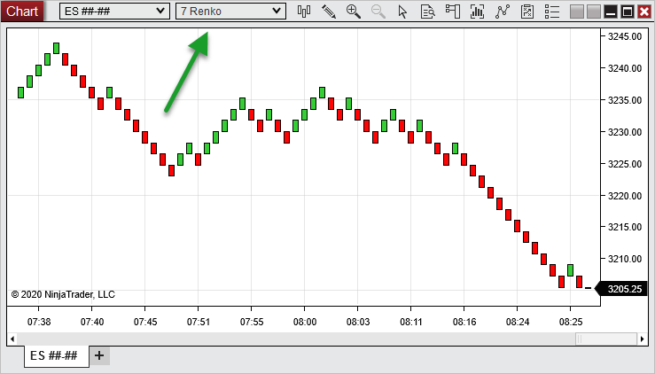
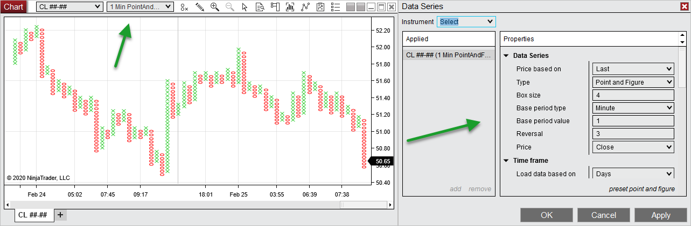
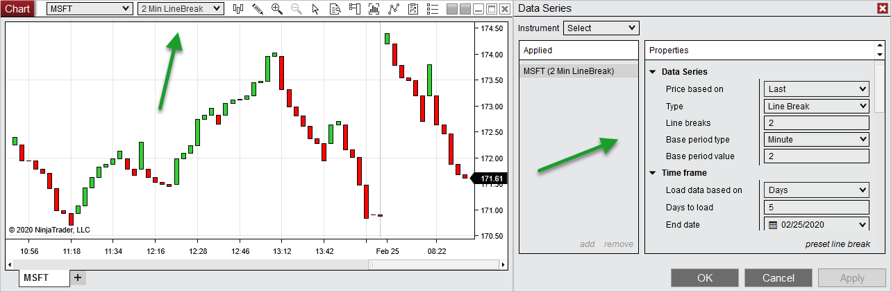

|
<< Click to Display Table of Contents >> Bar Types |


|
Bar Types
|
<< Click to Display Table of Contents >> Bar Types |
|
NinjaTrader supports a large variety of chart Bar Types. This page explains how each Bar Type is created in a chart. Please see the Working with Price Data page for information on how to change Bar Types.
Notes: •For some Bar Types, the last bar of a session may be built as an incomplete bar due to the session ending before the bar could be completed. Each new session will have bars freshly built beginning from the first tick of the session. For example, the last bar of a session in a 10,000 Volume chart may contain a volume less than 10,000, while the next bar which builds on a new session would contain 10,000 volume. This behavior can be changed via the "Break at EOD" Data Series property. For more information, see the Break at EOD page. •When backtesting different Bar Types (most notably Point and Figure and Renko) the backtest can yield different results than what you would experience in real-time, due to the nature of how the bars are constructed and the possibility of not having enough granular information to simulate what would have happened in real-time. Please see the Discrepancies: Real-time vs Backtest page for more information. •When working with TickReplay, the bars will be built from tick data available through the provider or local repository. For developing NinjaScript objects taking advantage of this option, please see this link. |
Tick BarsA Tick bar is based on a specific number of ticks. A bar will continue to develop until the specified number of ticks is reached. The next tick will then result in a new bar being created.

1. Each historical bar in the the 500 Tick chart shown above plots a total of 500 ticks. 2. The "Tick Counter" indicator has been applied to the chart to show the number of ticks remaining in the current bar. |
Volume BarsA Volume bar is based on a specific number of units traded (volume). A bar will continue to develop until the specified volume is reached, and once that level is surpassed, a new bar will be created.

1. Each historical bar in the 10,000 Volume chart shown above contains a volume of 10,000 contracts. 2. This is verified by the "VOL" indicator plotted below the price bars and the Volume displayed in the Mini Data Box. |
Range BarsA Range bar is based on a specified tick price range. The bar will continue to develop until the price range is broken, at which point a new bar will be created.

1. Each historical bar in the 4 Range chart shown below represents exactly 4 ticks of price movement. 2. The Ruler Drawing Tool verifies that each bar consists of 4 ticks. (The "Y value" of 1.00 shown in the Ruler's display flag is equivalent to 4 ticks for the e-mini S&P 500 continuous contract instrument on the chart.) |
Time BarsSecond, Minute, Day, Week, Month, and Year bars are all built based on the passage of time. A bar will develop for a specified amount of time, and once this time is exceeded, a new bar will begin.

1. Each historical bar in the 1 Minute chart shown below represents price movement during one minute in time. 2. The "Bar Timer" indicator has been applied to the chart to show the time remaining for the current bar.
|
 Understanding Heiken Ashi bars
Understanding Heiken Ashi bars
Heiken Ashi BarsHeiken Ashi in Japanese translates to "Average Bar" in English. These bars are intended as a way to isolate ongoing trends. Heiken Ashi bars may appear to plot the Open, High, Low, and Close of price within a specified time period, similar to Candlestick bars. However, these bars use unique formulas to calculate OHLC values based on mathematical averages. Like Candlesticks, Heiken Ashi bars are based on the passage of time, and can be set to any Second, Minute, Day, Week, Month, or Year interval.
The chart below displays Heiken Ashi bars based on a 2-minute interval:
 |
Kagi BarsKagi bars are based on price movement. A Kagi bar will plot in the direction of price until price reverses a specified amount, known as the Reversal. The bar will then change direction, but stay the same color until the last bar's High or Low is surpassed. The length of time the bar will develop depends upon the Base period.
For example, suppose the price of an instrument is heading down and the Reversal is set to 2 ticks. The line will continue to plot downward until price reverses more than 2 ticks. At this point, the line will change direction, but stay red by default. Once the last Kagi bar High is exceeded, the line will change to green by default, and the same rules will apply in the opposite direction. The chart below displays a 1 Minute Kagi chart with a Reversal set to 2 ticks.
 |
Renko BarsRenko bars are based on price movement. Each bar is known as a "brick," and is plotted as green by default when price is moving up and red by default when price is moving down. A new brick is plotted when price exceeds the High or Low of the previous brick by a specified amount, known as the Brick size. The chart below displays Renko bars with a Brick size of 7:
 |
 Understanding Point and Figure bars
Understanding Point and Figure bars
PointAndFigure BarsPointAndFigure bars are built based on price movement. Each bar plots a column made up of either X's representing a rising price or O's representing a decreasing price. Each X or O is referred to as a "box" and represents the price distance defined by the Box size (set in terms of ticks). A new X or O box will be added to the bar when price moves more than the Box size, warranting the addition of another box.
Another parameter, called the Reversal, sets the amount of price movement needed from the High or Low to change from X's to O's, or from O's to X's. A column will continue indefinitely until a price reversal equal to the Reversal amount (set in number of boxes) occurs. There can never be two columns of X's or O's next to each other for a given session, as any additional X's or O's would be added to the current column instead. When a reversal occurs, the next column begins one box size above the last Low for X's, or one box size below the last High for O's.
For example, the chart below shows PointAndFigure bars based on a 1 Minute Data Series. The Box size is set to 4 and the Reversal is set to 3.
 |
Line Break BarsLine Break bars are built based on price movement. Line Break bars must break above or below the High or Low of a specific set of prior bars before a new bar will be drawn. The "Line Breaks" parameter sets the number of previous bars in the set whose High or Low the current price must break.
For example, if the "Line Breaks" parameter is set to 2, as shown in the chart below, the first bar will be drawn based on whether the Close was above or below the Open. The second bar in the chart is drawn with a green color by default if price exceeds the first bar's High and red by default if price drops below the Low of the first bar. No new bar is drawn if price does not exceed the High or Low of the previous bar. The third bar is only plotted once price breaks the High/Low of the last 2 bars, since the LineBreaks parameter is set to 2. If the last break occurred on the upside, a color change will occur when price breaks the last Low. If the last break occurred on the downside, a color change will occur when price breaks the last High.
 |
 Understanding Order Flow Volumetric Bars
Understanding Order Flow Volumetric Bars
For information on how to work with the Order Flow Volumetric Bars and Bar Statistics, please see the Order Flow Volumetric Bars page in the OrderFlow + section of the Help Guide. |